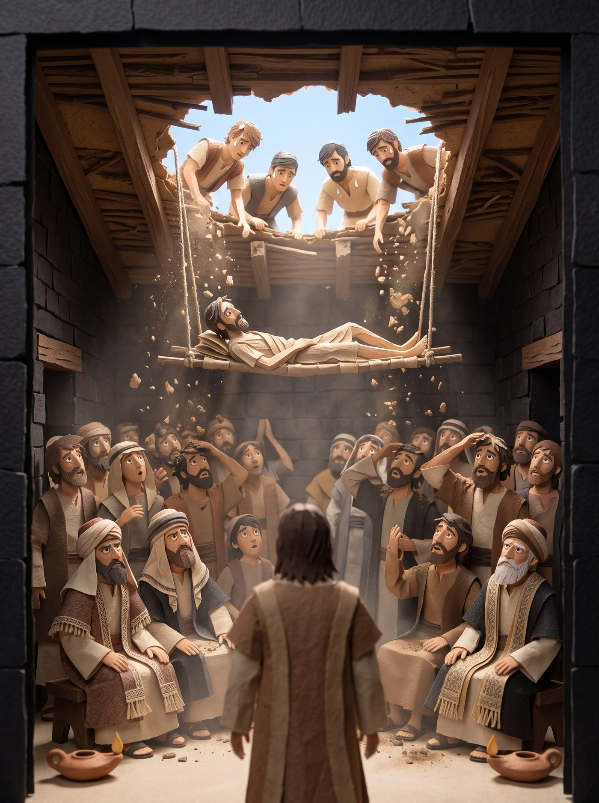
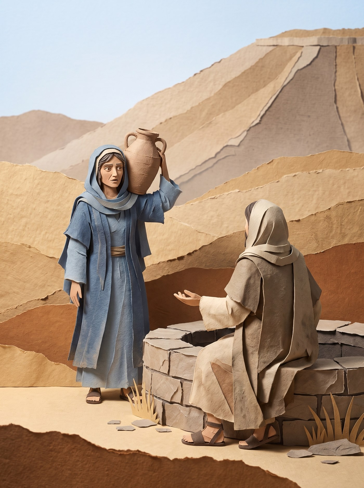
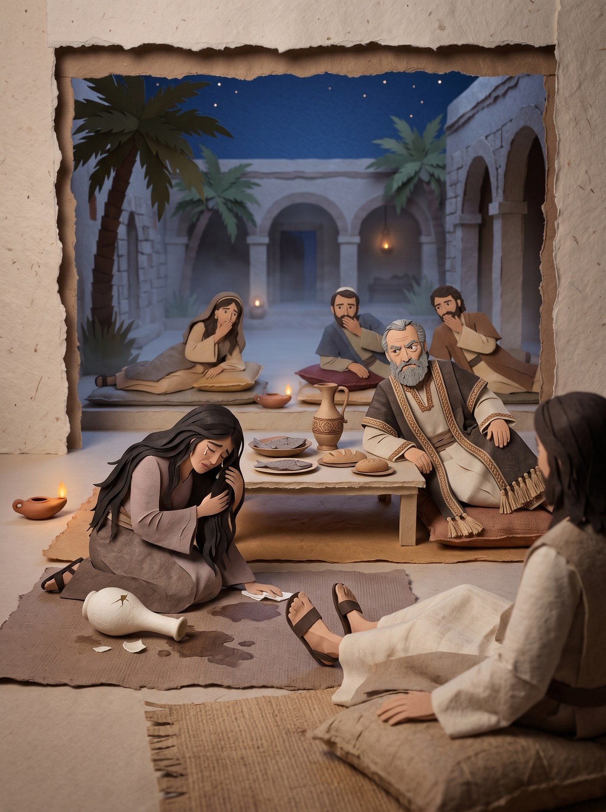

Capítulo 9
El que perdona
Parte II: el cumplimiento · Marcos 2; Juan 4; Lucas 7
La escena
Recreación: así pudo haber sido. Los hechos están en Marcos 2, Juan 4 y Lucas 7. Lo que pensaban y sentían se imagina a partir del texto y de lo que se sabe de la época.
Cuatro amigos y un techo
Capernaum es un pueblo de pescadores a la orilla del mar de Galilea. Casas bajas de piedra volcánica negra, con un patio en el medio, y techos planos hechos de vigas de madera, ramas y barro apisonado. Se sube a ellos por una escalera de afuera. En las noches de calor la gente duerme arriba.
Jesús se queda ahí, probablemente en la casa de Pedro, que vivía en Capernaum. Y un día se corre la voz de que está en casa. En pocos minutos la casa se llena. Y el patio. Y la puerta. Gente apretada hasta la calle, estirando el cuello para escucharlo.
Y por la calle vienen cuatro hombres cargando una camilla. En la camilla hay un amigo suyo que no puede moverse. Un paralítico. Un hombre que lleva quién sabe cuántos años acostado, dependiendo de otros para comer, para lavarse, para todo. Y en aquel tiempo mucha gente pensaba que una enfermedad así era un castigo de Dios por algún pecado. Así que además de no poder caminar, cargaba con la mirada de los demás.
Llegan a la puerta. Imposible entrar. Nadie se mueve.
Y entonces a uno de ellos se le ocurre una locura. Suben por la escalera de afuera, cargando la camilla, hasta el techo. Y empiezan a romperlo.
«Y como no podían acercarse a él a causa de la multitud, descubrieron el techo de donde estaba, y haciendo una abertura, bajaron el lecho en que yacía el paralítico» (Mc 2:4).
Imagina estar adentro. Jesús está enseñando, y de pronto empieza a caer tierra del techo. Pedazos de barro, ramas, polvo, sobre la cabeza de la gente. El dueño de casa mirando para arriba sin poder creerlo. Se abre un hueco, entra la luz del sol. Y por el hueco aparecen cuatro caras sudadas, y una camilla que empieza a bajar, con sogas, hasta quedar justo delante de Jesús.

Todos esperan que Jesús lo sane. A eso vinieron. Y Jesús mira hacia arriba, a los cuatro amigos asomados por el agujero, y dice la Biblia que vio la fe de ellos. Y después mira al hombre acostado. Y le dice algo que nadie esperaba:
«Hijo, tus pecados te son perdonados» (Mc 2:5).
Hijo. Y tus pecados te son perdonados. Ni siquiera le habló de sus piernas.
¿Quién puede perdonar pecados?
Sentados ahí, en primera fila, hay unos escribas, maestros de la ley. Hombres que se sabían las Escrituras de memoria. Y no dicen nada en voz alta, pero en su corazón se escandalizan:
«¿Por qué habla este así? Blasfemias dice. ¿Quién puede perdonar pecados, sino solo Dios?» (Mc 2:7).
Y tenían razón. En eso tenían toda la razón. En el Antiguo Testamento, el perdón de los pecados era cosa de Dios. Él mismo lo había dicho por Isaías: «Yo, yo soy el que borro tus rebeliones por amor de mí mismo, y no me acordaré de tus pecados» (Is 43:25). Un ser humano podía perdonar lo que le hicieron a él. Pero perdonar los pecados de alguien contra Dios, eso solo lo podía hacer Dios. Y el camino para ese perdón pasaba por el templo de Jerusalén, por el sacerdote, por la sangre del sacrificio en el altar, por el Día de la Expiación.
Y este hombre de Nazaret, en una casa de pescadores, sin templo, sin altar, sin sacerdote, sin cordero, le dice a un paralítico: tus pecados te son perdonados.
O es un blasfemo, o es Dios.
Jesús sabe lo que están pensando. Y les hace una pregunta:
«¿Qué es más fácil, decir al paralítico: Tus pecados te son perdonados, o decirle: Levántate, toma tu lecho y anda?» (Mc 2:9).
Decir «tus pecados te son perdonados» es fácil, porque nadie puede comprobarlo. Decir «levántate» es otra cosa: ahí se ve enseguida si funciona o no. Y entonces Jesús usa el título que había visto Daniel en su visión, el de aquel «hijo de hombre» al que Dios le entregaba todo el dominio:
«Pues para que sepáis que el Hijo del Hombre tiene potestad en la tierra para perdonar pecados (dijo al paralítico): A ti te digo: Levántate, toma tu lecho, y vete a tu casa» (Mc 2:10-11).
Silencio.
Y el hombre que llevaba años sin moverse siente algo en las piernas. Las mueve. Se apoya. Se pone de pie. Se agacha, enrolla su camilla, se la pone al hombro, y sale caminando por en medio de la gente, que ahora sí se aparta.
«De manera que todos se asombraron, y glorificaron a Dios, diciendo: Nunca hemos visto tal cosa» (Mc 2:12).
Y arriba, en el techo, cuatro hombres con las manos llenas de barro, llorando y riéndose a la vez.
Amigo de pecadores
Poco después, Jesús pasa junto a la mesa de un cobrador de impuestos llamado Leví. Los cobradores de impuestos trabajaban para Roma, cobraban de más, y todos los odiaban: eran traidores y ladrones a los ojos del pueblo. Jesús lo mira y le dice: sígueme. Y Leví se levanta, deja todo y lo sigue.
Esa noche, Leví hace una cena en su casa, e invita a sus amigos. Cobradores de impuestos, gente de mala fama, pecadores conocidos. Y Jesús se sienta a comer con ellos. Los fariseos, escandalizados, les preguntan a los discípulos cómo es posible que su maestro coma con esa gente.
Y Jesús les contesta:
«Los sanos no tienen necesidad de médico, sino los enfermos. No he venido a llamar a justos, sino a pecadores» (Mc 2:17).
Mediodía en el pozo
Un tiempo después, Jesús va de Judea a Galilea. Y el camino corto pasa por Samaria.
La mayoría de los judíos evitaban ese camino. Daban una vuelta larga por el valle del Jordán con tal de no pisar Samaria. Judíos y samaritanos se odiaban desde hacía siglos. Para los judíos, los samaritanos eran mestizos, descendientes de los pueblos que trajeron los asirios, con una religión mezclada y un templo propio en el monte Gerizim. Para los samaritanos, los judíos eran unos soberbios que se creían los únicos dueños de Dios.
Jesús no da la vuelta. Va derecho.
«Y estaba allí el pozo de Jacob. Entonces Jesús, cansado del camino, se sentó así junto al pozo. Era como la hora sexta» (Jn 4:6).
La hora sexta es el mediodía. El sol cae a plomo. Los discípulos se fueron al pueblo a comprar comida. Y Jesús, cansado, con sed, está solo, sentado en el borde del pozo que cavó Jacob, el del capítulo 3, cerca del terreno que Jacob le dejó a su hijo José.
Y viene una mujer con su cántaro a sacar agua.
Al mediodía. Las mujeres iban al pozo temprano en la mañana o al caer la tarde, cuando no hacía calor, y en grupo, conversando. Esta viene sola, a la hora en que no hay nadie. Muchos han pensado que quizás no quería encontrarse con las otras.
Y Jesús le dice: «Dame de beber» (Jn 4:7).
Ella se queda helada. Un hombre judío hablándole a ella. Y pidiéndole agua, a ella, en su cántaro, que para un judío estaba impuro.
«¿Cómo tú, siendo judío, me pides a mí de beber, que soy mujer samaritana? Porque judíos y samaritanos no se tratan entre sí» (Jn 4:9).

Y Jesús le responde con un misterio:
«Si conocieras el don de Dios, y quién es el que te dice: Dame de beber; tú le pedirías, y él te daría agua viva» (Jn 4:10).
Ella mira el pozo, profundo, y lo mira a Él, que ni siquiera tiene un balde. ¿De dónde va a sacar agua viva? ¿Acaso es más grande que Jacob, que les dio este pozo? Y Jesús le dice que el que bebe de esa agua vuelve a tener sed, pero:
«Mas el que bebiere del agua que yo le daré, no tendrá sed jamás; sino que el agua que yo le daré será en él una fuente de agua que salte para vida eterna» (Jn 4:14).
Y ella, medio en serio, medio cansada de cargar ese cántaro todos los días al mediodía, le dice que le dé de esa agua, para no tener que volver más al pozo.
Entonces Jesús le dice algo que la toca en la herida: que vaya a llamar a su marido. Y ella, bajando la mirada, le contesta que no tiene marido.
«Jesús le dijo: Bien has dicho: No tengo marido; porque cinco maridos has tenido, y el que ahora tienes no es tu marido; esto has dicho con verdad» (Jn 4:17-18).
Su lucha. La lucha de esta mujer está en esa frase. Cinco maridos. La Biblia no dice por qué. En aquel tiempo una mujer no podía divorciarse de su marido; era el hombre el que la despedía, a veces por cualquier motivo. Quizás enviudó. Quizás la despidieron uno tras otro. Quizás también ella se equivocó muchas veces. Lo cierto es que vivía con un hombre que no era su marido, en un pueblo donde todos lo sabían. Era samaritana, despreciada por los judíos. Era mujer, en un mundo donde un maestro no hablaba en público con mujeres. Y era, para su propio pueblo, una mujer con una historia que se contaba en voz baja. Por eso, quizás, iba al pozo al mediodía. Para no ver a nadie. Y Jesús fue a esperarla justamente ahí, a esa hora, y le habló de su vida sin una palabra de desprecio. No le dijo «eres una pecadora». Le dijo «has dicho con verdad». Y después le dijo a ella, antes que a casi nadie, quién era Él.
Ella cambia de tema, como hacemos todos cuando nos tocan donde duele. Le habla del templo, de dónde hay que adorar, si en este monte o en Jerusalén. Y le dice que cuando venga el Mesías, Él les va a explicar todo.
Y Jesús le responde:
«Yo soy, el que habla contigo» (Jn 4:26).
Yo soy. Las palabras de la zarza. A una samaritana, al mediodía, junto a un pozo.
Y la mujer deja su cántaro ahí mismo, olvidado en el borde del pozo, y corre al pueblo. La mujer que se escondía de la gente ahora va a buscar a la gente. Y les grita en la plaza:
«Venid, ved a un hombre que me ha dicho todo cuanto he hecho. ¿No será este el Cristo?» (Jn 4:29).
Me dijo todo lo que he hecho. Y no me rechazó. Eso era lo que no podía creer.
Salen todos del pueblo a verlo. Jesús se queda dos días con ellos, con los samaritanos, los despreciados. Y al final le dicen a la mujer:
«Ya no creemos solamente por tu dicho, porque nosotros mismos hemos oído, y sabemos que verdaderamente este es el Salvador del mundo, el Cristo» (Jn 4:42).
Una mujer en casa de Simón
Otro día, en Galilea, un fariseo llamado Simón invita a Jesús a comer a su casa. Quizás por curiosidad. Quizás para examinarlo de cerca.
En las cenas importantes de aquella época se comía recostado en divanes bajos, alrededor de la mesa, apoyado en el codo izquierdo, con los pies descalzos hacia atrás. Y las casas quedaban abiertas: la gente del pueblo podía entrar a mirar, a escuchar la conversación, de pie junto a las paredes.
Y entra una mujer.
«Entonces una mujer de la ciudad, que era pecadora, al saber que Jesús estaba a la mesa en casa del fariseo, trajo un frasco de alabastro con perfume» (Lc 7:37).
Una mujer de la ciudad, que era pecadora. Todos saben quién es. Se le nota en la cara a cada invitado. Los murmullos. Las miradas. Ella no tendría que estar ahí. Lo sabe. Y entra igual.
Se para detrás de Jesús, a sus pies. Y antes de poder hacer nada, se le quiebra la voz. Y se pone a llorar.
«Y estando detrás de él a sus pies, llorando, comenzó a regar con lágrimas sus pies, y los enjugaba con sus cabellos; y besaba sus pies, y los ungía con el perfume» (Lc 7:38).

Lágrimas que caen sobre los pies polvorientos de Jesús. Y ella, sin nada con qué secarlos, se suelta el cabello, algo que una mujer decente nunca hacía en público, y le seca los pies con el pelo. Y los besa. Y rompe el frasco y derrama el perfume, y la casa se llena del olor.
Nadie dice nada. Pero Simón piensa:
«Este, si fuera profeta, conocería quién y qué clase de mujer es la que le toca, que es pecadora» (Lc 7:39).
Y Jesús, que sabe lo que piensa, le cuenta una historia corta. Un prestamista tenía dos deudores. Uno le debía quinientas monedas, y el otro, cincuenta. Ninguno de los dos podía pagar, y les perdonó la deuda a los dos. ¿Cuál de los dos lo va a amar más? Simón contesta lo obvio: el que debía más.
Y entonces Jesús se da vuelta hacia la mujer. Pero le habla a Simón:
«¿Ves esta mujer? Entré en tu casa, y no me diste agua para mis pies; mas esta ha regado mis pies con lágrimas, y los ha enjugado con sus cabellos» (Lc 7:44).
¿Ves esta mujer? Simón la había visto toda la noche. Pero no la veía. Veía su fama. Jesús le pide que la mire de verdad. Y le enumera, una por una, las cortesías que Simón no tuvo con Él al recibirlo, el agua para los pies, el beso de saludo, el aceite para la cabeza, y que esa mujer le dio de sobra. Y después dice:
«Por lo cual te digo que sus muchos pecados le son perdonados, porque amó mucho; mas aquel a quien se le perdona poco, poco ama» (Lc 7:47).
Fíjate en el orden. Jesús no dice que ella se ganó el perdón llorando. La historia del prestamista lo explica: primero se perdona la deuda, y después viene el amor. Ella ama mucho porque ya sabe, o ya intuye, que se le perdonó mucho. Quizás lo escuchó a Él hablar en otro lugar, de lejos, entre la gente, y algo se le abrió por dentro. Por eso vino. No a negociar. A agradecer. Y Simón ama poco, no porque tenga menos pecados, sino porque cree que no le deben perdonar casi nada. Esa es la trampa del que se cree bueno: no siente que necesita al médico.
Y a ella, que seguía llorando a sus pies, le dice lo que había venido a escuchar sin atreverse a pedirlo:
«Tus pecados te son perdonados» (Lc 7:48).
Y alrededor de la mesa vuelve la misma pregunta de Capernaum, la misma pregunta de la barca en la tormenta:
«¿Quién es este, que también perdona pecados?» (Lc 7:49).
Jesús no les contesta. Le habla a ella:
«Tu fe te ha salvado, ve en paz» (Lc 7:50).
Ve en paz. Probablemente la primera vez en años que alguien le decía algo así.
La historia según la Biblia
Reina-Valera 1960
El paralítico
«Al ver Jesús la fe de ellos, dijo al paralítico: Hijo, tus pecados te son perdonados.» — Marcos 2:5
El escándalo
«¿Por qué habla este así? Blasfemias dice. ¿Quién puede perdonar pecados, sino solo Dios?» — Marcos 2:7
El agua viva
«Mas el que bebiere del agua que yo le daré, no tendrá sed jamás; sino que el agua que yo le daré será en él una fuente de agua que salte para vida eterna.» — Juan 4:14
La mujer del perfume
«Y a ella le dijo: Tus pecados te son perdonados.» — Lucas 7:48
La sombra de Jesús
El perdón sin templo. El paralítico no fue al templo. No llevó un cordero. No pasó por el sacerdote. Jesús lo perdonó en una casa de pescadores. Y no es que Jesús se saltara el sacrificio: Él mismo iba a ser el sacrificio. El perdón que repartió en Capernaum, en Samaria y en la casa de Simón, lo iba a pagar unos meses después en Jerusalén, en la Pascua.
El agua viva. En el desierto, Moisés golpeó la roca y salió agua para un pueblo sediento. Jesús, sentado junto a un pozo, le ofrece a una mujer sedienta un agua que no se acaba. Y en la cruz, el que le pidió agua a la samaritana diría: tengo sed.
El perfume. La mujer derramó perfume sobre los pies de Jesús, como se hacía con los cuerpos de los muertos. Ella no lo sabía, pero estaba ungiendo a alguien que iba a morir por ella.
¿Quién es este? El paralítico, la samaritana, la mujer del perfume: los tres eran personas que otros habían juzgado. Y los tres escucharon de Jesús algo que solo Dios puede decir. En el capítulo siguiente vamos a ver cuánto le costó decirlo.
Nota del autor
Las mujeres también son vistas con amor por Dios. El caso de la que derramaba el perfume, o la samaritana… miles de errores.
Jesús perdona los pecados, y la gente está asombrada, cuestionando quién es este que perdona los pecados.
Para seguir leyendo
- Marcos 2: el paralítico y la cena con los pecadores.
- Juan 4: la samaritana junto al pozo.
- Lucas 7:36-50 y Lucas 8:1-3: la mujer del perfume y las mujeres que seguían a Jesús, entre ellas María Magdalena.
- Isaías 43 y Salmo 103: el Dios que perdona y no se acuerda.
- Lucas 15: las tres parábolas de lo perdido: la oveja, la moneda y el hijo.